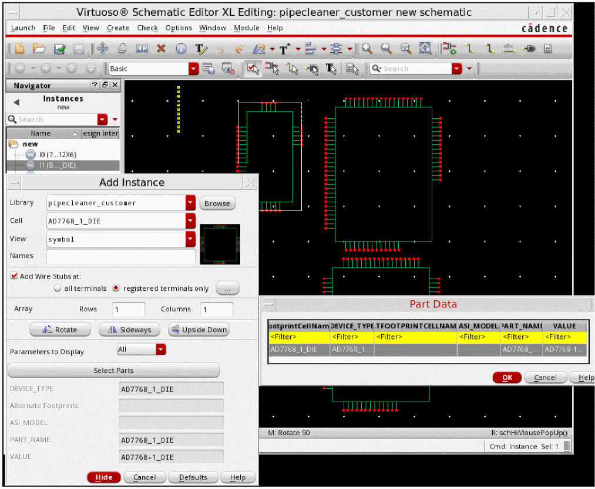
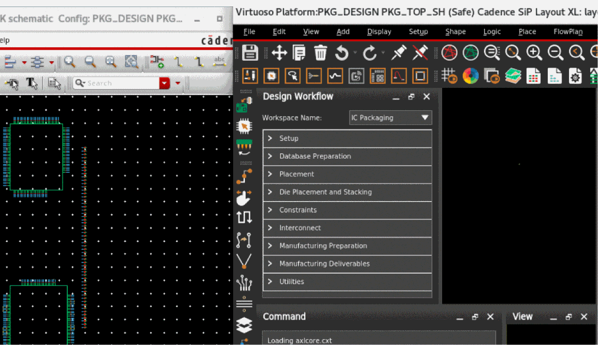
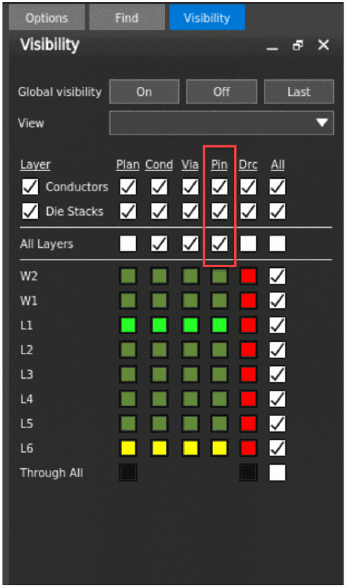

Creating a SiP Layout from a Package Schematic
Before, you create a SiP layout, ensure that the IC, PCB, and Sigrity hierarchy paths have been set for a seamless flow of tasks in the Virtuoso Multi-Technology Solution environment.
-
Create a package schematic by selecting parts and adding instances in the canvas.
 - Choose Launch – Layout SiP.
- Create a new layout by using the New File form. The Cadence SiP Layout opens.
-
Arrange Cadence Virtuoso Schematic Editor and Cadence SiP Layout windows alongside.
 - Import the technology and parameter files.
-
In the Visibility tab on the canvas, enable Pin for Layer Conductors. A blank layout with complete technology information is created.

Related Topics
Generating a SiP Layout from a Source Schematic
Checking Against Source Schematic
Return to top